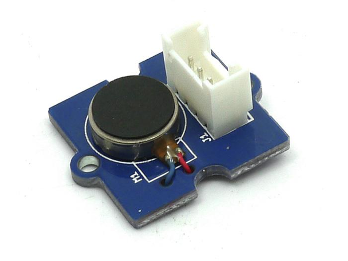

The original Grove - Mixer Pack is a stand-alone, Lego-like electronics kit that consists of 20 select Grove modules from the Grove System developed by Seeed Studio. These mini-modules can be used as building blocks to create electronic circuits and prototypes quite rapidly without necessarily using a Microcontroller board such as a Seeeduino or an Arduino.
The 20 Grove modules included are a combination of sensor modules, actuators, logic and power modules that are extremely easy to use and fun to work with. Within minutes, you can design new circuits and assemble functional prototypes.
By connecting different input and output modules, a variety of projects can be made. For example, a sound or a light sensor can be used as input to trigger an output such as lighting up of an LED or activating a small DC motor circuit. Logic gate modules can add more flexibility into the logic through which inputs will trigger outputs.
These modules are small and colorful bits of electronics, and so much fun to play with for both children and adults alike.
With the Grove - Mixer Pack, you can easily learn the basic concepts of electronics, and also improve your practical ability to apply these concepts. This is the perfect way to let yourself into the wonderful world of electronics by working on your very own interactive projects.

There are three power supply modules in Mixer. They are DC Jack Power, USB Power and Coin Battery Power. All of them output 5V.
DC Jack Power Schematic

USB Power Schematic
Coin Battery Power Schematic
You can select one of three to apply to your mixer system. Remember that power-supply module is indispensable, without it, your mixer system will not work.
Grove – Mixer Pack need not to program, own to logic modules which can achieve functions instead of code. Logic Modules include Grove – AND、 Grove – OR、 Grove – NOT.
AND Schematic
AND has three Grove sockets. On the left are two input sockets for you to add sensors. On the right is the output socket for actuator. The logical relationship between them is: Vout=1/2(Vin1+Vin2).
AND outputs the average value of two inputs.
NOT Schematic
NOT has one input on the left and one output. The logical relationship of them is: Vout =~ Vin. It outputs a HIGH signal when it gets a LOW signal on the input end, and vice versa.
OR Schematic
OR has two input sockets and one output socket. The logical relationship of them is: Vout= (Vin1) || (Vin2). It outputs HIGH as long as one of its input signals is HIGH.
SUB Schematic
SUB has two different inputs and one output. The logical relationship of them is: Vout = (Vin1-Vin2).
It only outputs positive voltage when Vin1 is bigger than Vin2. Otherwise, the output will be LOW.
Branch Schematic
Branch has one input and two outputs. The logical relationship of them is: Vout1=Vin; Vout2=Vin.
The output signals are just the same as the input.
Amplifie Schematic
Amplifier is a gain adjustable module that gives you larger output. The logical relationship of its input and output is: Vout= Vin (1+R2). R2 (0~1k) refers to the pot on the board. This module can give you a comparable output signal to drive the actuator when input signal is weak.
Pluse Schematic
The duty ratio of the output wave signal is positively proportional to the input signal. That means the larger the input signal, the larger the duty ratio.
Sensors in Mixer are commonly used and easy to understand ones. They are:
Grove – Light Sensor, Grove - Slide Potentiometer, Grove – Button and Grove – Sound Sensor
 |
 |
 |
 |
Actuators in Mixer are all basic but essential ones. They are:
 |
 |
 |
Next we are going to show you some examples about how we construct a circuit. We will start at the simplest circuit and step by step enlarge it.
A meaningful circuit should include modules of three parts: sensor, power and actuator, as shown below.
As a first circuit, we turn on/off an LED.

The LED will come on when the button gets pressed. The following diagram explains how signal travels through the circuit.
Now let's move on to add some logic to our circuit. In the circuit below, the LED will come on when either of the button gets pressed.
Try other sensors and actuators to see what happens.
Note:
If you want to control an led and a buzzer simultaneously, Grove – Branch can help. Based on the last circuit, add Grove – Branch and Grove - Buzzer to the circuit following the next diagram.
In this way, two actuators will work when the button gets pressed. How to make more actuators work? Add more branches!
Grove - Pulse is an interesting module that gives your buzzer some groove. Just add it in front of the buzzer then you get BBBBBB...
Not content with the endless beep, we can use Grove – Slide to give it some rise and fall. With an analog input, you can change the frequency of the sound or light.

File:Grove - Mixer Pack Eagle File
If you have questions or other better design ideas, you can go to our forum or wish to discuss.
Copyright (c) 2008-2016 Seeed Development Limited (www.seeedstudio.com / www.seeed.cc)